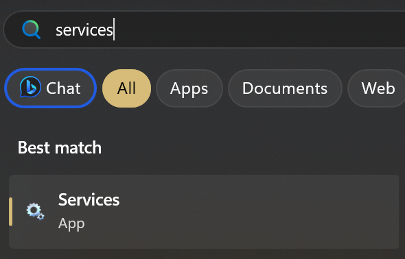
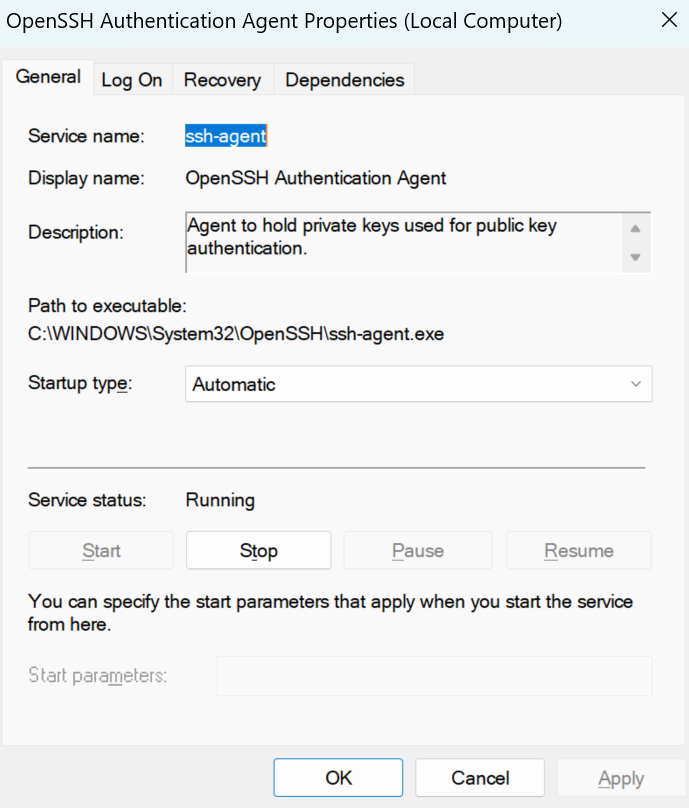
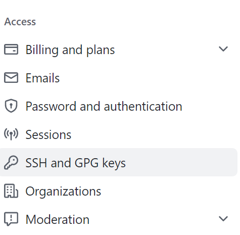

Secure shell allows you to access remote servers and remote repositories. This is done by public-key encryption (or asymmetric cryptography). It is a very secure and most easy way to interact with remote environments!
This tutorial will run you through how to generate SSH keys whether your on your local machine or a remote server.
Prereqs
Windows
- Press Start and search for "Git Bash". Click on it to open a new shell.
- In the terminal either type or copy-paste the following command and replace
<KEY_NAME>with an appropriate name (e.g.laptop,desktop,school_server, etc.):
ssh-keygen -t ed25519 -f ~/.ssh/<KEY_NAME> -N ""
For example, let's say that you named your key laptop. The command above will generate 2 files in the directory C:\Users\<your_name>\.ssh\: laptop (private key) and laptop.pub (public key).
- Verify that ssh-agent is running by searching for "Services" in the Start Menu:

- Search for "OpenSSH Agent" and make sure that the Status is "Running" and Startup Type is "Automatic".

- If this is not the case, right-click on the "OpenSSH Authentication Agent" entry -> select "Properties" -> Under "Service Status" select "Start" -> From the "Startup Type" drop down menu, select "Automatic".


- Lastly, verify that your private key is added to your ssh-agent keyring by typing the following command in terminal where
<KEY_NAME>is the name of the key you created earlier:
ssh-add $HOME/.ssh/<KEY_NAME>
macOS/Linux
- Find your terminal application and open up a new shell:
- macOS: cmd + space, then search "terminal"
- Ubuntu: ctrl + alt + t
- In the terminal either type or copy-paste the following command and replace
<KEY_NAME>with an appropriate name (e.g.laptop,desktop,school_server, etc.):
ssh-keygen -t ed25519 -f ~/.ssh/<KEY_NAME> -N ""
For example, let's say that you named your key laptop. The command above will generate 2 files in the directory ~/.ssh/: laptop (private key) and laptop.pub (public key).
- Verify that your ssh-agent is running by using the following command:
eval "$(ssh-agent -s)"
- Lastly, verify that your private key is added to your ssh-agent keyring by typing the following command in terminal where
<KEY_NAME>is the name of the key you created earlier:
ssh-add ~/.ssh/<KEY_NAME>
In order to connect to trusted remote servers (such as PSTAT's Denali) without needing to authenticate using a password, we can use the SSH key(s) that we generated as a form of instant authentication. In order to do so, we need to send a copy of our public keys to the remote server.
This can be achieved very easily by using Git Bash (Windows) or your terminal emulator (macOS/Linux) and typing the following command:
ssh-copy-id <user>@<host>
Using terminal
Using Git Bash (Windows) or your terminal emulator (macOS/Linux) we can directly connect to a remote server using the following command:
ssh <remote_user>@<remote_host>
This will open an instance of the server within your terminal.
(Optional) Creating an alias
If you want to spend less time typing or remembering the different servers you have access to, you can create aliases for your remote connections.
To create an alias we can create a config file using Git Bash (Windows) or your terminal emulator (macOS/Linux) using the following steps:
- Using your terminal (Git Bash or your terminal emulator) on your local machine with VS Code installed type the following command to create and open a config file for editing:
code $HOME/.ssh/config or for macOS/Linux code ~/.ssh/config
- We can create the following entry for
denali.pstat.ucsb.edu:
Host research_server
Hostname denali.pstat.ucsb.edu
User <NETID>
- We can now connect to the Denali server using:
ssh research_server
In order to work and make changes to any remote repositories on GitHub, you must setup your SSH keys on the website.
- Using Git Bash (Windows) or your terminal emulator (macOS/Linux) type the following command to access the contents of your public key (where
<KEY_NAME>is the name of your key you created earlier e.g.laptop.pub)
code $HOME/.ssh/<KEY_NAME>.pub or for macOS/Linux code ~/.ssh/<KEY_NAME>.pub
- Copy the contents of the public key to your clipboard.
- Open github.com, login, navigate to the top right corner and click on your user profile, and enter the settings:

- On the left panel under "Access", click on "SSH and GPG keys":

- Click on the "New SSH key" button.
- In the form,
- Fill out the title of the key. Preferably call it the current machine you're creating the entry for e.g. "laptop"
- Paste the public key you copied earlier into the "Key" box

- Click the "Add SSH key" button.
- Go back to terminal and open up your SSH config file:
code $HOME/.ssh/config or for macOS/Linux code ~/.ssh/config
- Add a new entry with the following details where
<KEY_NAME>is the key you created earlier.
# GITHUB Host github.com HostName github.com PreferredAuthentications publickey IdentityFile ~/.ssh/<KEY_NAME>
This completes the tutorial on SSH!